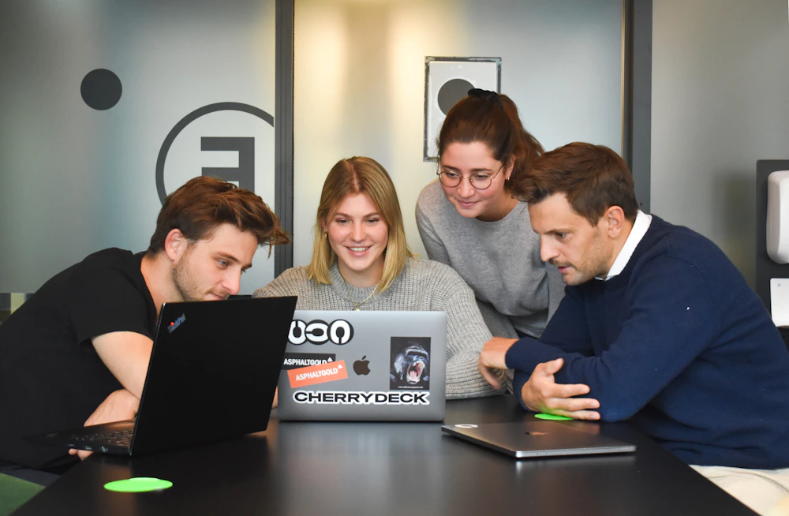
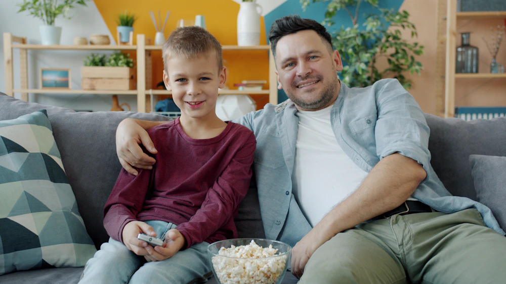
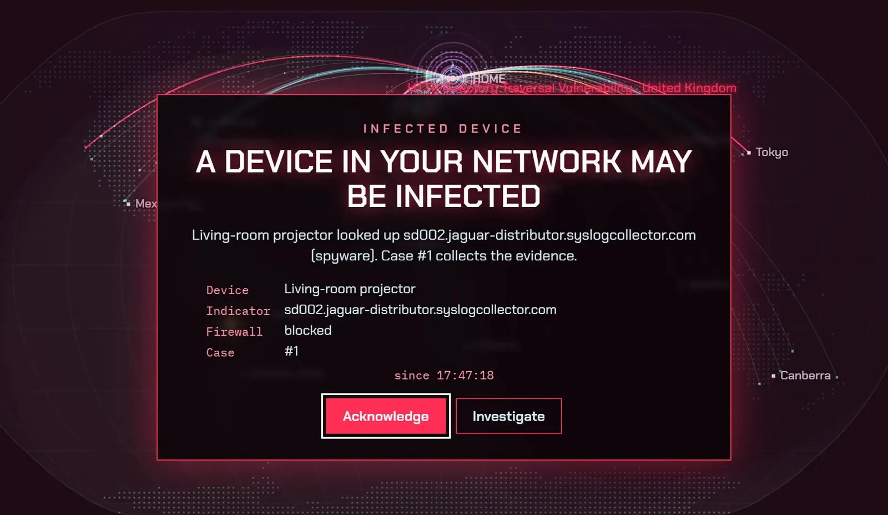

Pienyritykset
Kauppa, kahvila, vastaanotto tai toimisto ilman omaa IT-osastoa. Maksupäätteet, kamerat ja asiakkaiden Wi-Fi samassa verkossa, valvottuina sillä aikaa kun sinä pyörität yritystä.
Valvoo verkkoasi vuorokauden ympäri
Northwatch pitää silmällä jokaista yrityksesi laitetta ja kertoo sinulle vain silloin, kun jotain oikeasti tapahtuu, selkeällä suomella. Tietoturva-asiantuntijaksi ei tarvitse ryhtyä. Northwatch kertoo tosiasiat, sinä päätät.
Edullinen kuukausihinta. Omaa IT-osastoa ei tarvita.
Hälytys, juuri nyt
Neuvotteluhuoneen projektori voi olla saastunut
Se yritti ottaa yhteyttä vakoilupalvelimeen 1 350 kertaa. Palomuurisi pysäytti lähes kaikki yritykset.
Mitä tehdäIrrota se verkostasi.
Kenelle
Suuryritykset maksavat tietoturva-asiantuntijoille siitä, että niiden verkkoa valvotaan ympäri vuorokauden. Pienet ja keskisuuret yritykset kohtaavat samat hyökkäykset samoista paikoista, mutta niitä ei vahdi kukaan. Northwatch korjaa tämän.
Kauppa, kahvila, vastaanotto tai toimisto ilman omaa IT-osastoa. Maksupäätteet, kamerat ja asiakkaiden Wi-Fi samassa verkossa, valvottuina sillä aikaa kun sinä pyörität yritystä.

Tiimit, jotka ottavat tietoturvan vakavasti, mutta joilla ei ole varaa ympärivuorokautiseen tietoturvatiimiin tai kokoaikaiseen asiantuntijaan. Northwatch valvoo, ja IT-henkilösi saa todisteet.

Edullisen hinnan ansiosta Northwatch sopii myös vaativaan kotiverkkoon: älytelevisiot, lasten tabletit ja halvat vempaimet valvotaan kuin toimistossa.
Rakennettu ja hinnoiteltu suurille organisaatioille, sopimukset sen mukaan.
Kokonainen palkka, ja silti vain yksi ihminen, joka nukkuu öisin.
Kuukausimaksu, jolla verkkoasi valvotaan ympäri vuorokauden ja saat selkeän viestin, kun pitää toimia.
Miten se toimii
Kun Northwatch on otettu käyttöön verkossasi, se valvoo yötä päivää, ja kuulet siitä vain, kun jokin vaatii sinua.
Kaikkea, mikä tulee verkkoosi ja lähtee sieltä, ja sitä, mitä laitteesi tekevät verkon sisällä. Hiljaa, ympäri vuorokauden.
Tuhannet koputukset oveen joka päivä ovat tavallisia, ja ne pysäytetään. Verkkosi laite, joka juttelee rikollisten kanssa, ei ole tavallista. Northwatch tietää eron.
Mitä tapahtui, missä laitteessa ja mitä tehdä, selkeällä suomella. Sinä päätät. Yksi painallus, ja laite on poissa verkosta.
Tositapaus
Halpa Android-projektori liitettiin kodin Wi-Fiin sunnuntai-iltana. Muutamassa sekunnissa se alkoi ottaa yhteyttä vakoilupalvelimeen kaksi kertaa sekunnissa, taukoamatta. Palomuuri esti lähes kaikki yritykset. Northwatch tunnisti kuvion ja hälytti. Sama voi tapahtua toimiston neuvotteluhuoneen projektorille.

SaastunutMelko varma
Mitä tapahtui
Projektori yritti ottaa yhteyttä vakoilupalvelimeen yli tuhat kertaa muutamassa minuutissa käynnistyksen jälkeen. Halvoissa projektoreissa on joskus vakoiluohjelma valmiiksi asennettuna.
Mitä tehdä
Selkokielellä
Jokainen hälytys kertoo, mitä tapahtui, kuinka varma Northwatch on ja mitä tehdä nyt, pian ja myöhemmin. Kirjoitettu ihmisille, ei asiantuntijoille.
Selitys on vapaaehtoinen. Ennen kuin mitään lähetetään, näet tarkalleen, mitä verkostasi lähtisi, ja kodin tai toimiston tiedot piilotetaan.
Verkkosi yhdellä silmäyksellä
Puhelimet, tietokoneet, näytöt, kamerat ja muut laitteet, kukin omassa ryhmässään. Northwatch oppii, mikä on verkossasi tavallista, ja näyttää sen, mikä ei ole.

Mitä se pitää silmällä
Murtautumisyritykset internetistä, pysäytettyinä ja kartalla. Voit katsoa aina, kun kiinnostaa.
Televisio, kamera tai vempain, joka yhtäkkiä ottaa yhteyttä paikkoihin, joihin sillä ei ole asiaa.
Tiedät heti, kun verkkoosi liittyy jotain uutta, ja näet sille tunnistettavan nimen.
Jos joku verkossasi alkaa nuuskia paikoissa, joihin hänellä ei ole asiaa, kuulet siitä.
Milloin yhteys katkeaa ja kuinka luotettava se oikeasti on päivän, viikon ja kuukauden aikana.
Näytöllä ja puhelimessa. Jos vakavaan hälytykseen ei reagoi kukaan, Northwatch soittaa sinulle.
Ei uutta verkkoa eikä uusia laitteita opeteltavaksi. Northwatch toimii sen palomuurin rinnalla, joka sinulla jo on.
Kaikki pysyy kotona tai toimistolla. Mitään ei avata internetiin.
Ei isoja aloituskuluja, ei suuryrityksille kirjoitettuja sopimuksia eikä omaa IT-osastoa.
Ennakkokäyttö
Northwatch on ennakkokäytössä suomalaisille yrityksille ja myös kotiverkkoihin. Lähetä viesti, niin kerromme lisää ja näytämme Northwatchin toiminnassa omassa verkossasi.